registryproxy
统一入口，不是单点工具
它不是一个孤立的 MCP server，而是一个可 federation 的 registry / proxy 层。
- 聚合工具与代理
- 统一 endpoint
- 治理与路由一体化
ContextForge 是一个开源 registry + proxy + control plane：它为 AI 客户端提供统一入口、治理、发现、路由与观测，把多协议能力聚合成一个可控的平台。
最有价值的部分不是“又一个 gateway”，而是它把 discovery、policy、routing、proxy、plugins、observability 统一到一个入口里。
画布是暖米白，中央用深色控制台，协议节点用紫绿蓝橙做语义分层。整体是一张可读的 enterprise architecture poster。

它不是一个孤立的 MCP server，而是一个可 federation 的 registry / proxy 层。
Auth、RBAC、rate limiting、retry、审计与 tracing 都是原生能力，而不是附加项。
Docker、PyPI、Kubernetes、Redis federation 说明它面向生产与多集群场景。
知识库检索 · 文件系统 · 代码执行 · 数据分析。
偏工具层、资源层、标准 server。
研究代理 · 任务执行代理 · 多步规划代理。
偏 agent 协作、任务分发与规划。
业务 API · 第三方服务 · SaaS 集成。
偏传统服务接入与 API 代理。
内部微服务 · 高性能服务 · 模型推理服务。
偏内部高性能与协议转换。
统一身份、统一权限、统一入口。适合企业平台的第一层控制。
每次工具调用、每次路由、每次代理都可追踪，适合合规与排障。
保护上游与下游，防止请求洪峰冲击生产环境。
# 先看 5-minute setup - PyPI: uvx / pip install / local dev - Containers: Docker / Compose - Docs: architecture / API reference / troubleshooting - Deployment: Kubernetes + Redis federation - More: Full documentation on ibm.github.io/mcp-context-forge
ContextForge 的价值不只是“支持很多协议”，而是把协议联邦、权限治理、路由代理、插件扩展和可观测性组合成一个统一控制面。
平台、工具、代理、API 很多，而且需要统一治理的人最适合。
如果你想让读者一眼看懂“入口、治理、协议、观测”，这种主题最合适。
它不是贴纸卡，不是纸感卡，也不是黑头调查卡；它是 enterprise gateway poster。
Published information card · based on IBM/mcp-context-forge